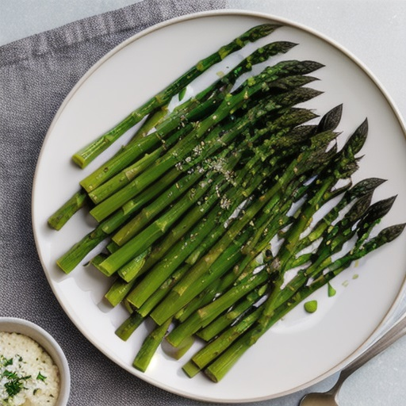

Braised Asparagus

Description
It can be difficult to cook asparagus to the desired texture, but if done right these serve as a flavorful and buttery side to many dishes.
Ingredients
- 1 pound asparagus, tough bottoms trimmed
- 2 tablespoons vegetable oil
- Kosher salt
- Freshly ground black pepper
- 1 cup low-sodium chicken or vegetable stock
- 3 tablespoons unsalted butter
- 1 teaspoon lemon juice
Steps
- Heat oil in a 12-inch sauté pan over high heat until lightly smoking.
- Add asparagus in as close to a single layer as possible, season with salt and pepper, and cook, without moving it, until lightly browned on the first side, about 90 seconds. Shake the pan and cook until the asparagus is browned again, 90 seconds longer.
- Add the stock and butter to the pan, immediately cover it, and cook until the asparagus is completely tender and the stock and butter have emulsified and reduced to a shiny glaze, 7 to 10 minutes. If the stock completely evaporates and butter starts to burn before the asparagus is cooked through, top up with a few tablespoons of water.
- Stir in the lemon juice and serve immediately.